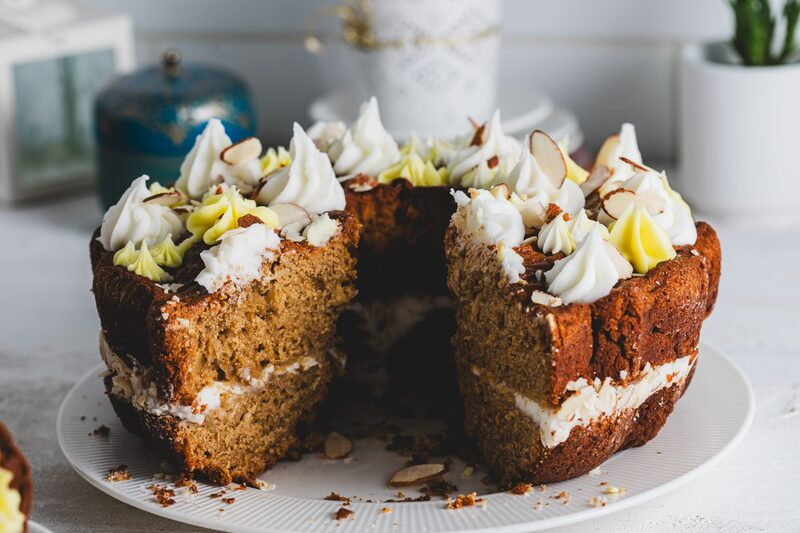
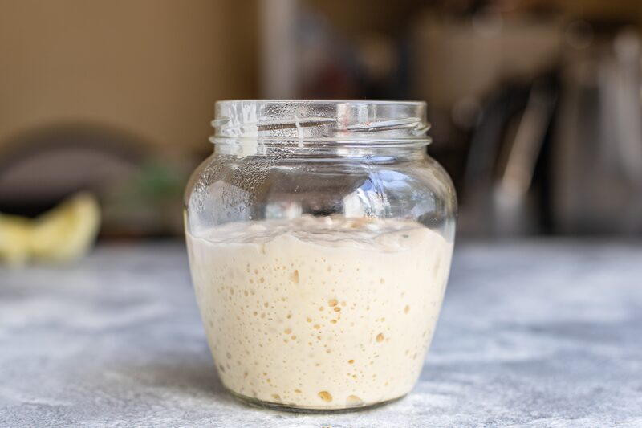
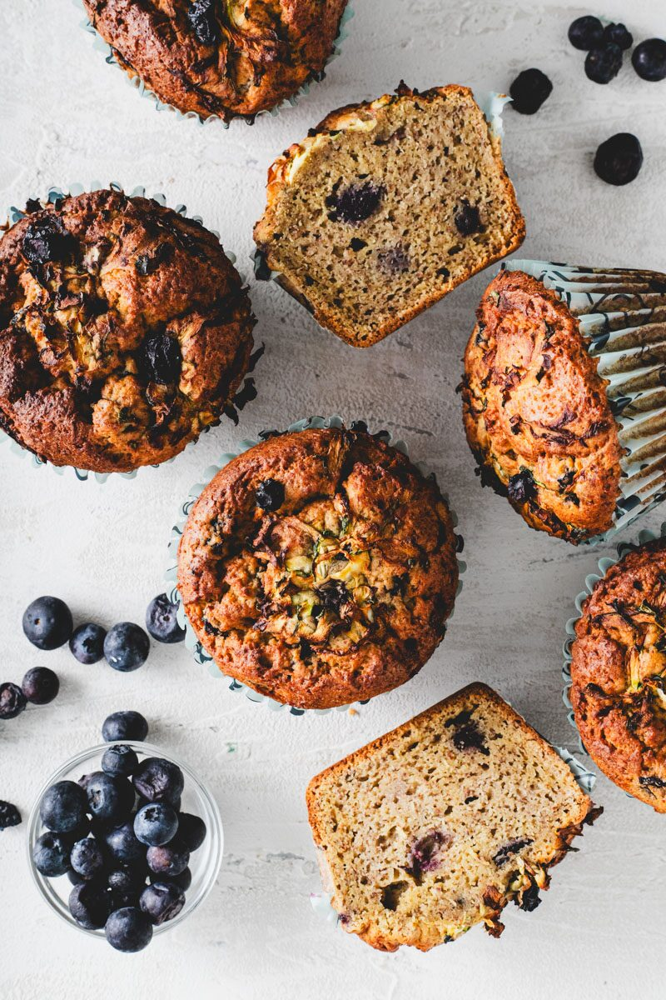
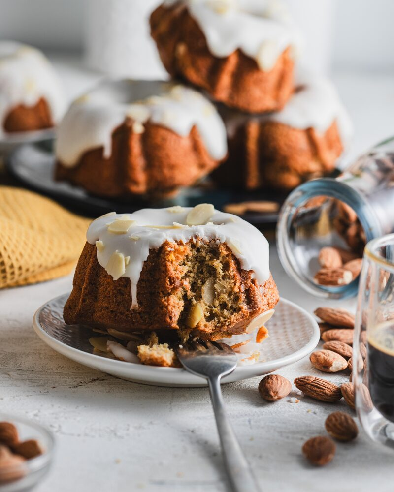
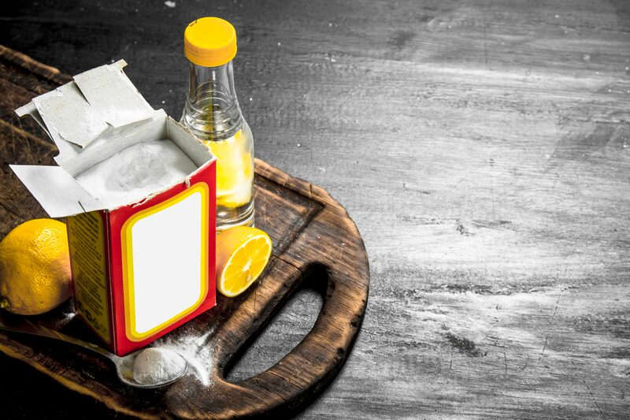

Leaveners: The Last Piece of Perfect Gluten-Free Baking
Most gluten-free bakes come out dense because the leavener goes in at the wrong time, in the wrong amount, or the wrong type. Here's how I get a stubborn gluten-free batter to rise — timing, type, and amount.
You're not using baking powder the right way. I'd bet on it.
This is the fifth and final component in perfecting your gluten-free bakes — after flours, binders, fats, and sugars — and it's the one that makes or breaks the rise: leaveners. Baking soda, baking powder, yeast, sourdough.
When a gluten-free bake comes out dense, it's almost always one of three things: the leavener went in at the wrong time, you didn't use enough, or you used the wrong type. Let me walk through all three.
The three kinds of lift
There are three ways to get air into a bake:
- Chemical — baking soda and baking powder. This does most of the heavy lifting, especially in gluten-free.
- Mechanical — whipping and creaming. Highly underrated for rise. Beating air into your fat or your eggs changes texture more than people give it credit for.
- Biological — yeast and sourdough. My favorite. This gives you slow fermentation, long open air pockets, real flavor — but it's a skill you have to master.

Most of this post is about the chemical side, because that's where gluten-free goes wrong most often.
Why gluten-free changes the rules

In wheat baking, gluten forms a net. That net holds everything together and traps the gas your leavener gives off, so the bake rises and sets around all those bubbles.
In gluten-free baking, we don't get that. So you have to build something to take its place before the leavener ever goes in. Add your binders first, and give your starches time to hydrate into a thick batter. If the batter is too runny, the gas bubbles just travel straight up and out, and you lose them. The viscosity of your batter is part of your leavening system. Treat it like one.
Timing: add your baking powder last

This is the big one. Add your baking powder at the very end, after the gel network has formed with your binders and your starches have had time to hydrate. Give it 20 to 30 minutes to come together, then add the leavener and get it in the oven.
Adding it at the end means the gas releases into a batter that's finally thick enough to hold it. That single change is the surest way to get a stubborn gluten-free bake to rise.
Type: know what your leavener needs

Baking powder brings its own acid built in, so it activates on its own with moisture and heat.
Baking soda does not. It needs an acid to react with — lemon juice, applesauce, buttermilk, something. Drop baking soda into a batter with nothing acidic, and it's not doing a thing for you except leaving a soapy, metallic aftertaste. Match the leavener to what's actually in your bowl.
Amount: more than wheat, but not by much
Gluten-free needs more leavener than wheat baking does. The batter is heavier, and there's no gluten to help the structure hold.
Don't be shy to ramp up your leavener, but there's also a ceiling. Too much and the bake shoots up, can't support itself, and collapses — with that bitter aftertaste we all know too well from bad gluten-free. More is better here, right up until it isn't.
The percentages I use, by category
Here's where I land for each kind of bake. These are baker's percentages — the weight of leavener as a percent of your total flour and starch blend. Weigh your dry blend, take the percent, and you've got your leavener.
| Bake | Baking powder | Baking soda | Notes |
|---|---|---|---|
| Cakes & cupcakes | 3–4% | +0.5% if acidic | Add the soda only when there's buttermilk, cocoa, or citrus in the mix. |
| Muffins & quick breads | 3–4% | 0.5–1% | Use the soda when there's banana, applesauce, or yogurt. |
| Pancakes & waffles | 4–5% | — | Highest lift — a thin batter needs it. |
| Scones & biscuits | 4–6% | — | For that tall, layered jump. |
| Cookies | 1–2% | 0.5–1% | Soda needs brown sugar or molasses for spread and color. |
| Brownies & blondies | 0.5–1% | — | Dense on purpose — keep lift minimal. |
| Yeasted breads & rolls | 1–2% instant yeast | — | Let it proof — don't rush the rise. |
| Sourdough | 15–25% starter | — | That's your levain inoculation, not a chemical leavener. |
Start in the middle of each range and adjust from there — wetter batters and heavier add-ins want a little more, delicate ones want a little less.
And that completes the series — flours, binders, fats, sugars, leaveners. If your gluten-free bakes still aren't where you want them, tell me what's going wrong in the comments. Thank you very much.